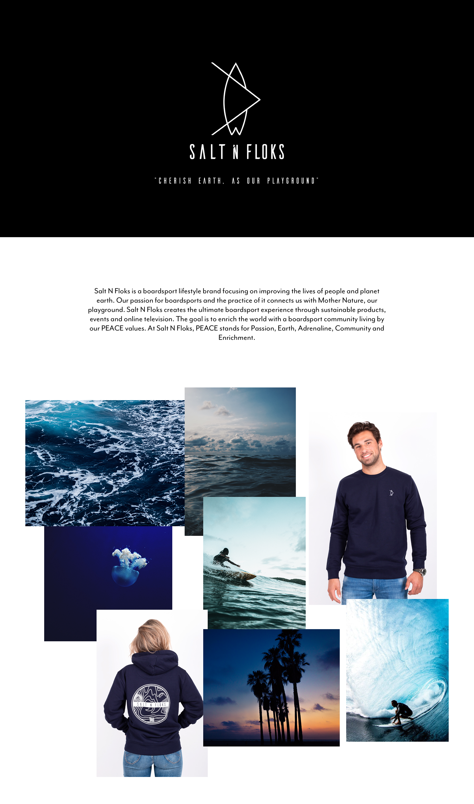

SNF - Social Media
Salt N Floks is a boardsport lifestyle brand focusing on improving the lives of people and planet earth. Our passion for boardsports and the practice of it connects us with Mother Nature, our playground. Salt N Floks creates the ultimate boardsport experience through sustainable products, events and online television. The goal is to enrich the world with a world with a boardsport community living by our PEACE values. At Salt N Floks. PEACH stands for Passion, Earth, Adrenaline, Community and Enrichment.
